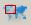
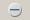

| AOI Monitoring | |
The Area Of Interests (AOI)
Monitoring allows users to specify, save, and load AOIs to be
automatically batch processed using a chain of processing steps
defined with the Graph Builder.
AOIs can be specified graphically by drawing polygons on the world map. AOIs can be saved and reloaded without requiring the user to re-enter any parameters.
The user must specify the input folder where to scan recursively for new products, the output folder where to save the processed results, and the processing graph.
Click the "AOI Monitoring" button  to open the "AOI Monitoring" window.
Click the "Create New AOI" button  to open the "New Area of Interest" window.
to open the "New Area of Interest" window.
In the "New Area of Interest" window", type in a name for the AOI (e.g., aoi_1.xml). User can browse for a location to save the file. Click "Save" to close the "New Area of Interest" window and open the "Area of Interest" window.
In the "Area of Interest" window, user can edit the name of the AOI, select the input and output folders, select the processing graph and specify the AOI by drawing a rectangle in the world map. If no rectangle is drawn, then the entire globe is the AOI.
The "Find CCD Slave" checkbox is a placeholder and should not be checked.
Click "OK" to save the AOI xml file. Note that the AOI xml file is saved only if a valid graph is selected. However, even without a valid graph, the AOI will nevertheless appear in the "Areas of Interest" list in the"AOI Monitoring" window after the "Area of Interest" window is dismissed. It will stay in the list for the duration of the SNAP session, in case the user wants to edit and save it.
To delete an AOI from the "Areas of Interest" list, hightlight it and click the "Remove AOI" button . Only one AOI can be highlighted a a time. When an AOI is highlighted, the rectangle for the AOI will be in red in the world map
To edit an AOI, highlight it in the "AOI Monitoring" window and double click to open the "Area of Interest" window. Note that an empty error message window may pop up - click "OK" or "Cancel" to close it.
Click the "Add Existing AOI" button  to open the "Add Area of Interest" window. The user can select the xml
file of an existing AOI and click "Save". A message may pop up asking if
it is OK to overwrite, click "Yes". The existing AOI will be added to the "Areas of Interest" list in the "AOI
Monitoring" window. If the user types in a new AOI
name, a new AOI with that name will be added to the "Areas of Interest" list for the user to edit later.
to open the "Add Area of Interest" window. The user can select the xml
file of an existing AOI and click "Save". A message may pop up asking if
it is OK to overwrite, click "Yes". The existing AOI will be added to the "Areas of Interest" list in the "AOI
Monitoring" window. If the user types in a new AOI
name, a new AOI with that name will be added to the "Areas of Interest" list for the user to edit later.
To process one AOI, highlight and click the AOI. Wait for the "Process selected AOI" button  to become sensitive and click it. At this point, the input folder
will be added to the Product Library if it is not already in it. This
starts the search for products in the AOI in the input folder. The
"Batch Processing" window will open populated with the search results.
Products that have already been processed will be excluded from the
search results. If no products are inside the AOI or they have all been
processed, a warning message will pop up. Trim the search results in
the "Batch Processing" window as needed and click "Run" to start batch
processing.
to become sensitive and click it. At this point, the input folder
will be added to the Product Library if it is not already in it. This
starts the search for products in the AOI in the input folder. The
"Batch Processing" window will open populated with the search results.
Products that have already been processed will be excluded from the
search results. If no products are inside the AOI or they have all been
processed, a warning message will pop up. Trim the search results in
the "Batch Processing" window as needed and click "Run" to start batch
processing.
To start monitoring all AOI folders, click the "Begin Monitoring all AOI folders" button . It will turn red and become the "Stop monitoring AOIs" button. When new products in any of the AOI folders are found to be covered in whole or partially by the AOI, that AOI will be queued for batch processing.
To stop the monitoring, click the red "Stop monitoring AOIs" button, it will turn back to green.
There is no limit to the number of AOIs that can be defined for monitoring. Processing for multiple AOIs will be queued.